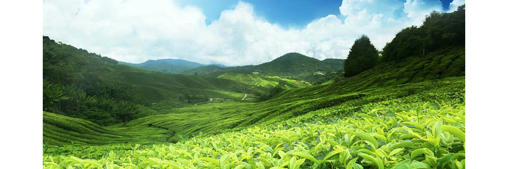

ตั้งอยู่ที่ หมู่ที่ 7 บ้านมูเซอลาบา ตำบลแม่ฟ้าหลวง อำเภอแม่ฟ้าหลวง จังหวัดเชียงราย
ตั้งอยู่ที่ 418 ม.1 แม่สลองนอก แม่ฟ้าหลวง เชียงราย เปิดให้บริการทุกวัน เวลา 08.30 น.- 17.00 น.
ตั้งอยู่หมู่ที่ 3 ตำบลวาวี อำเภอแม่สรวย จังหวัดเชียงราย

ตั้งอยู่ ต.แม่กรณ์ อ.เมือง จ.เชียงราย
เปิดให้บริการทุกวัน เวลา 07.00 น. - 18.00 น.
ตั้งอยู่บริเวณบ้านห้วยชมภู ตำบลห้วยชมภู อำเภอเมือง จังหวัดเชียงราย
เปิดให้บริการทุกวัน เวลา 08.00 น.- 18.00 น. ตั้งอยู่ที่ ตำบล เวียงกาหลง อำเภอ เวียงป่าเป้า เชียงราย

เปิดให้บริการทุกวัน เวลา 09.00 น. - 17.00 น. ตั้งอยู่ที่ 333 หมู่ 13 ตำบล นางแล อำเภอเมืองเชียงราย จังหวัด เชียงราย 57100
เปิดให้บริการทุกวัน เวลา 09.00 น. - 17.00 น. ตั้งอยู่ที่ ถนน พหลโยธิน ตำบล บ้านดู่ อำเภอเมืองเชียงราย จังหวัด เชียงราย 57100

เปิดให้บริการทุกวัน ยกเว้นวันฉัตรมงคล เวลา 8.30 น. - 16.30 น. ตั้งอยู่ที่ ตำบล รอบเวียง อำเภอเมืองเชียงราย จังหวัด เชียงราย 57000

เปิดให้บริการทุกวัน จ.-ศ. เวลา 08.30น. - 18.00 น. ส.-อา. 10.00น. - 18.00 น. ตั้งอยู่ที่ ตำบล เวียง อำเภอเมืองเชียงราย จังหวัด เชียงราย 57000

เปิดบริการให้เข้าชมทุกวัน 08.00 น. - 17.30 น. ตั้งอยู่ที่ 81/1, ถนนหน้าค่าย, ตำบลรอบเวียง อำเภอเมืองเชียงราย จังหวัดเชียงราย, 57000
เปิดให้เข้าชมทุกวัน : เวลา 7.00 น. - 20.00 น. ตั้งอยู่ที่ 553 หมู่ 3 ตำบล ริมกก อำเภอเมืองเชียงราย จังหวัด เชียงราย 57100

เปิดให้เข้าชม. วันจันทร์-ศุกร์ เวลา : 08.00 – 17.00 น. ตั้งอยู่ที่ ตำบล ป่าอ้อดอนไชย อำเภอ เมืองเชียงราย จังหวัด เชียงราย 57000
เปิดให้เข้าชมทุกวัน : เวลา 7.00 น. - 20.00 น. ตั้งอยู่ที่ 306 หมู่ 2 ตำบล ริม กก อำเภอ เมือง เชียงราย จังหวัด เชียงราย 57100
เปิดให้เข้าชมทุกวัน : เวลา เปิดให้เข้าชมทุกวัน : เวลา 06.30-18.00 น. ตั้งอยู่ที่ ตำบล ห้วยไคร้ อำเภอ แม่สาย จังหวัด เชียงราย 57130

เปิดให้เข้าชมทุกวัน : เวลา 7.00 น. - 20.00 น. ตั้งอยู่ที่ 191 หมู่ 11 บ้าน ใหม่แสงแก้วตเดีย์หลวง อำเภอ แม่สรวย จังหวัด เชียงราย 57180